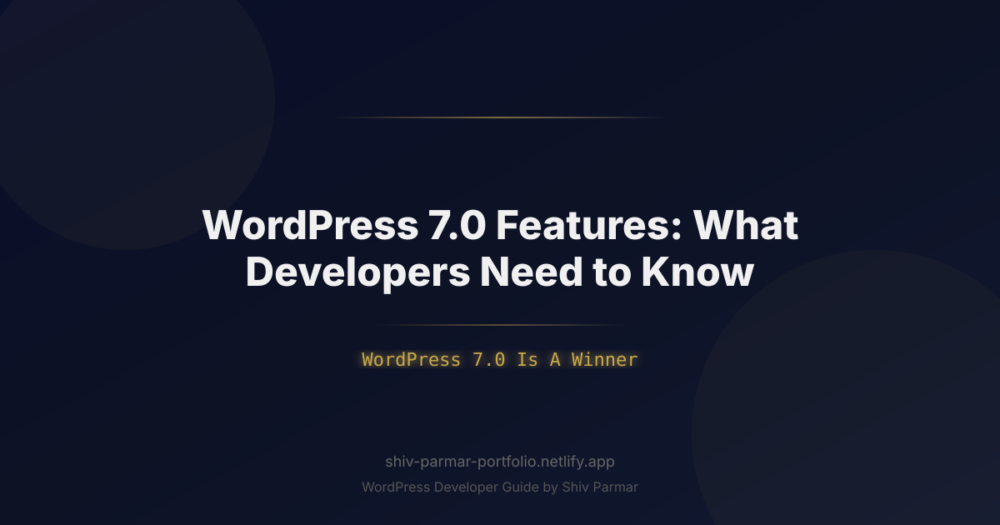

WordPress 7.0 Features: What Developers Need to | Shiv Parmar
Table of Contents
The release of WordPress 7.0 is a watershed moment for web developers, enterprise architects, and digital agencies. Over the past several release cycles, the world's most popular content management system has undergone a steady evolution, transitioning from a classic PHP-driven rendering engine into a modular, block-centric application framework. With version 7.0, this shift reaches its full maturity, delivering performance breakthroughs, native reactive state management, deeply integrated asynchronous background pipelines, and enhanced developer tooling that bridges the gap between traditional backend workflows and modern JavaScript frontend architectures.
For engineering teams managing high-volume enterprise sites, custom plugin ecosystems, or tailored client themes, version 7.0 requires a clear understanding of fundamental changes under the hood. The core software has doubled down on native browser APIs, reduced overhead for complex database operations, and introduced mandatory PHP standards that ensure maximum execution speed. Put simply, WordPress 7.0 Is A Winner for developers who leverage its standardized data pipelines, dynamic block bindings, and zero-configuration client-side rendering features.
Navigating this major upgrade requires moving past legacy patterns and adopting the modern standards established in this release. Whether you are refactoring legacy plugins, building headless-adjacent implementations, or optimizing block themes for strict Core Web Vitals targets, Here’s What You Need To Know to audit your codebase, leverage new core APIs, and deliver exceptional digital experiences in 2026.
What is WordPress 7.0 and Its Major Architectural Shift?
WordPress 7.0 represents a major paradigm shift in how the core application processes data, renders user interfaces, and handles execution flow. While previous iterations focused heavily on site-building interfaces and Gutenberg block editor usability, version 7.0 turns its attention directly to developer ergonomics, execution efficiency, and deep architectural modernization.
At the engine level, WordPress has redesigned several foundational subsystems. The core rendering pipeline now prioritizes fine-grained client-side hydration using an upgraded Interactivity API, allowing complex dynamic components to react to state changes instantly without full-page reloads or heavy third-party JavaScript framework dependencies. Concurrently, the backend codebase mandates modern PHP standards, officially setting minimum system requirements to PHP 8.3 while fully supporting the performance features of PHP 8.4.
The architectural shift can be categorized into four primary vectors:
- Standardized Dynamic Data Binding: The expanded Block Bindings API now natively connects block attributes directly to custom field data, REST endpoints, or site options without requiring custom block register JS code or PHP server-side block render callbacks.
- Asynchronous Task Queue: A native background processing engine replaces legacy pseudo-cron setups for heavy workloads like batch database migrations, media processing, and external API syncing.
- Theme Engine Modernization: Theme JSON v4 brings container query primitives, fluid typography calculations, and modular design token management directly into declarative configuration files.
- Database & Query Pipeline Optimization: Optimized object caching strategies and streamlined database query builders significantly reduce database execution time and RAM footprint during complex queries.
To visualize the magnitude of changes introduced in this release, the comparison table below highlights key architectural differences between previous releases and version 7.0:
| Feature / Subsystem | Legacy / Pre-7.0 Standard | WordPress 7.0 Standard |
|---|---|---|
| Minimum PHP Requirement | PHP 7.4 / 8.0 | PHP 8.3+ (Fully Optimized for 8.4) |
| Client-Side Frontend Logic | Vanilla JS / Custom React / jQuery | Standardized Interactivity API 2.0 Directives |
| Dynamic Data in Blocks | Custom Server-Side Render Callbacks | Native Block Bindings API with Custom Sources |
| Background Task Execution | WP-Cron (`spawn_cron` HTTP requests) | Native Async Task Queue with Worker Threading Support |
| Theme Design Tokens | Theme JSON v2/v3 (Basic Fluid Types) | Theme JSON v4 (Native Container Queries & Style Engine 3.0) |
| Client Navigation | Full Page Reloads / External SPA Libraries | Native Speculation Rules & View Transitions API |
Why WordPress 7.0 Matters in 2026
The web development ecosystem in 2026 demands instantaneous load times, accessible interactive components, and secure, maintainable server architecture. As single-page application (SPA) setups face criticism for excessive bundle sizes and SEO hydration penalties, the hybrid architecture offered by core software updates has become the preferred alternative. Examining the real-world impact of the WordPress Winner: Here’s how this release redefines modern enterprise web development.
First, site speed and Web Vitals compliance are no longer optional performance metrics; they directly influence search visibility and user retention. Version 7.0 incorporates native browser capabilities like the Speculation Rules API and View Transitions API straight out of the box. By pre-rendering eligible link targets on the client side based on user intent signals, sites running on version 7.0 achieve near-instantaneous page transitions while retaining the SEO benefits of server-rendered HTML.
Second, developer overhead is significantly reduced. In older releases, adding interactive state to a custom block—such as an expandable accordion, filterable product grid, or interactive modal—required enqueueing bulky custom JavaScript bundles or setting up complex React hydration bridges. The modern Interactivity API directives baked into core allow developers to write declarative HTML attributes that manage state reactively with virtually zero client-side setup.
Finally, enterprise security and code quality receive an immediate upgrade due to mandatory modern PHP requirements. By leveraging strict type declarations, read-only classes, match expressions, and enhanced memory handling introduced in modern PHP releases, plugins and themes running on 7.0 exhibit fewer runtime exceptions, tighter type safety, and substantially reduced memory allocation overhead per HTTP request.
Step-by-Step Guide to Preparing Your Code for WordPress 7.0
To help you audit, update, and build applications optimized for version 7.0, this guide walks through five key technical implementations. Each step covers modern APIs, code examples, and practical instructions for seamless migration.
1. Implementing Declarative Reactive Logic with Interactivity API 2.0
The Interactivity API provides a standardized mechanism for adding frontend interactivity to Gutenberg blocks using HTML data attributes (directives). In 7.0, the API introduces enhanced global state tracking, simplified context passing, and automated asset loading.
Instead of manually attaching event listeners via traditional JS files, you can define state, context, and callbacks directly within your block templates or HTML output.
Here is how to structure a modern reactive component using Interactivity API directives:
<?php
/**
* Interactive Counter & Filter Component Block Output
*/
$context = array(
'counter' => 0,
'isOpen' => false,
);
?>
<div
data-wp-interactive="my-custom-plugin"
data-wp-context='<?php echo esc_attr( wp_json_encode( $context ) ); ?>'
class="interactive-widget-box"
>
<div class="widget-header">
<h3>Dynamic Counter & Toggle</h3>
<button
data-wp-on--click="actions.toggleOpen"
data-wp-bind--aria-expanded="context.isOpen"
class="button"
>
<span data-wp-text="state.toggleLabel"></span>
</button>
</div>
<div data-wp-bind--hidden="!context.isOpen" class="widget-body">
<p>Current Count: <strong data-wp-text="context.counter"></strong></p>
<button data-wp-on--click="actions.increment" class="button button-primary">+ Increment</button>
<button data-wp-on--click="actions.decrement" class="button button-secondary">- Decrement</button>
</div>
</div>
On the JavaScript side, register the corresponding store definition using the standardized modern module import pattern:
import { store } from '@wordpress/interactivity';
store('my-custom-plugin', {
state: {
get toggleLabel() {
const { isOpen } = store('my-custom-plugin').context;
return isOpen ? 'Hide Panel' : 'Show Panel';
}
},
actions: {
toggleOpen() {
const context = store('my-custom-plugin').context;
context.isOpen = !context.isOpen;
},
increment() {
const context = store('my-custom-plugin').context;
context.counter++;
},
decrement() {
const context = store('my-custom-plugin').context;
if (context.counter > 0) {
context.counter--;
}
}
},
callbacks: {
logStateChange() {
const { counter } = store('my-custom-plugin').context;
console.log(`State updated. New count: ${counter}`);
}
}
});
2. Extending the Block Bindings API for Custom Data Sources
Version 7.0 simplifies dynamic content binding. Instead of writing custom render functions for every dynamic block, the Block Bindings API enables core blocks (such as Paragraph, Heading, or Image blocks) to directly bind their attributes to custom metadata, external APIs, or calculated values.
To register a custom binding source in your PHP code, utilize the updated register_block_binding_source() function:
<?php
/**
* Register a custom Block Binding Source for User Metrics
*/
function prefix_register_user_metrics_binding() {
register_block_binding_source(
'enterprise/user-metrics',
array(
'label' => __( 'User Metrics Data', 'textdomain' ),
'get_value_callback' => 'prefix_get_user_metric_value',
'uses_context' => array( 'postId' ),
)
);
}
add_action( 'init', 'prefix_register_user_metrics_binding' );
/**
* Callback to resolve binding value
*
* @param array $source_args Arguments passed to the binding.
* @param WP_Block $block_instance The block instance being rendered.
* @param string $attribute_name Name of the target attribute.
* @return string Computed value.
*/
function prefix_get_user_metric_value( array $source_args, $block_instance, string $attribute_name ): string {
$key = $source_args['key'] ?? '';
if ( 'active_subscribers' === $key ) {
$count = get_transient( 'enterprise_active_subscribers_count' );
if ( false === $count ) {
// Fetch metric from external service or database fallback
$count = 14500;
set_transient( 'enterprise_active_subscribers_count', $count, HOUR_IN_SECONDS );
}
return number_format_i18n( $count );
}
return '';
}
Inside your block markup (or theme block template), connect a standard paragraph block to this binding source without needing custom JavaScript blocks:
<!-- wp:paragraph {
"metadata": {
"bindings": {
"content": {
"source": "enterprise/user-metrics",
"args": {
"key": "active_subscribers"
}
}
}
}
} -->
<p>14,500</p>
<!-- /wp:paragraph -->
3. Utilizing Theme JSON v4 for Responsive Container Queries
Theme JSON v4 introduces direct control over modern CSS primitives. Upgrading your theme config file to version 4 unlocks layout-level container queries, standardized fluid typography curves, and scoped component tokens without writing manual CSS overrides.
Below is an example of an updated theme.json structure that implements version 4 schema enhancements:
{
"$schema": "https://schemas.wp.org/trunk/theme.json",
"version": 4,
"settings": {
"layout": {
"contentSize": "800px",
"wideSize": "1280px",
"enableContainerQueries": true
},
"typography": {
"fluid": true,
"fontSizes": [
{
"name": "Small",
"slug": "small",
"size": "clamp(0.875rem, 0.8rem + 0.375vw, 1rem)"
},
{
"name": "Heading Fluid",
"slug": "heading-fluid",
"size": "clamp(2rem, 1.5rem + 2.5vw, 3.5rem)"
}
]
},
"blocks": {
"core/group": {
"containerTypes": {
"default": "inline-size"
}
}
}
},
"styles": {
"blocks": {
"core/post-template": {
"css": "@container (min-width: 600px) { .wp-block-post { display: grid; grid-template-columns: 1fr 2fr; gap: 1.5rem; } }"
}
}
}
}
4. Offloading Heavy Workloads via the Native Task Queue API
Long-running background operations—such as syncing data with remote CRM endpoints, regenerating media derivatives, or processing webhooks—historically relied on WP-Cron, which could trigger performance bottlenecks on high-traffic sites. Version 7.0 introduces the Native Task Queue API.
This API registers background tasks into an asynchronous queue managed natively by background worker threads or system-level cron integrations.
Here is how to register and enqueue an asynchronous task:
<?php
/**
* Register background task handler on init
*/
function prefix_register_async_tasks() {
wp_register_async_task(
'enterprise_sync_user_data',
'prefix_process_user_sync_job',
array(
'retry_count' => 3,
'timeout' => 60,
'group' => 'crm-sync',
)
);
}
add_action( 'init', 'prefix_register_async_tasks' );
/**
* Dispatch task for background execution
*
* @param int $user_id ID of the user to sync.
*/
function prefix_trigger_user_sync( int $user_id ) {
wp_enqueue_async_task(
'enterprise_sync_user_data',
array(
'user_id' => $user_id,
'timestamp' => time(),
)
);
}
/**
* Task Execution Callback
*
* @param array $payload Task arguments passed at enqueue.
* @return bool True on success, false on failure.
*/
function prefix_process_user_sync_job( array $payload ): bool {
$user_id = $payload['user_id'] ?? 0;
if ( ! $user_id ) {
return false;
}
// Perform heavy HTTP API call or database update
$response = wp_remote_post(
'https://api.enterprise-crm.com/v1/sync',
array(
'timeout' => 30,
'body' => wp_json_encode( array( 'wp_user_id' => $user_id ) ),
'headers' => array( 'Content-Type' => 'application/json' ),
)
);
return ! is_wp_error( $response );
}
5. Refactoring Plugins for Mandatory PHP 8.3 Strict Typing
With core fully enforcing PHP 8.3 baseline standards, legacy PHP code missing return types, using deprecated dynamic properties, or relying on implicit type coercion will throw deprecation warnings or fatal errors. Updating your codebase requires enforcing strict types and modern OOP structures.
Here is an example of modernizing a legacy class into a secure, strongly-typed service container for 7.0:
<?php
declare(strict_types=1);
namespace Enterprise\Plugin\Services;
/**
* Readonly Data Transfer Object representing post metrics
*/
final readonly class PostMetricDTO {
public function __construct(
public int $postId,
public int $views,
public float $conversionRate,
public string $status
) {}
}
/**
* Class PostMetricsService
*/
class PostMetricsService {
/**
* Fetch aggregated post metrics using PHP 8.3 features
*
* @param int $postId
* @return PostMetricDTO
*/
public function getMetricsForPost( int $postId ): PostMetricDTO {
$metaViews = get_post_meta( $postId, '_views_count', true );
$views = is_numeric( $metaViews ) ? (int) $metaViews : 0;
$metaConversions = get_post_meta( $postId, '_conversions_count', true );
$conversions = is_numeric( $metaConversions ) ? (float) $metaConversions : 0.0;
$conversionRate = $views > 0 ? ( $conversions / $views ) * 100 : 0.0;
$status = match ( true ) {
$conversionRate >= 5.0 => 'high-performing',
$conversionRate >= 1.5 => 'average',
default => 'needs-optimization',
};
return new PostMetricDTO(
postId: $postId,
views: $views,
conversionRate: round( $conversionRate, 2 ),
status: $status
);
}
}
Best Practices for WordPress 7.0 Development
Adopting new features is only half the battle; writing clean, maintainable code requires following modern software engineering principles tailored to the core ecosystem.
1. Modularize Interactivity API Stores
Avoid creating monolithic state stores for your entire plugin or theme. Instead, slice your logic into small, scoped namespaces using the Interactivity API domain structure. Keep client state isolated to specific UI components (e.g., header search, product filters, comment threads) to prevent state conflicts and keep hydration costs low.
2. Favor Native Block Bindings Over Custom Server-Side Render Blocks
Dynamic blocks that previously relied on ServerSideRender or PHP render callbacks should be refactored to static HTML blocks with Block Bindings where possible. Binding block attributes directly to data sources allows core to cache static block structures while dynamically filling in content at execution time, drastically lowering rendering time compared to legacy dynamic blocks.
3. Enforce Strict Linting and Static Analysis
Incorporate strict tooling into your continuous integration (CI) pipeline. Use PHPStan or Psalm configured to level 8+ alongside PHP_CodeSniffer with updated rulesets (WordPress-Core, WordPress-Extra). Static analysis catches uninitialized dynamic properties, invalid type hints, and unescaped database outputs before code hits production staging environments.
// Example composer.json setup for standard analysis commands
{
"scripts": {
"analyze": "phpstan analyze src --level=8",
"lint:php": "phpcs --standard=WordPress src/",
"format:js": "wp-scripts format"
}
}
4. Leverage Speculation Rules API for Client-Side Transitions
Take advantage of native navigation APIs to deliver app-like speeds. Ensure your themes supply descriptive link rel tags or configure core speculation rules hooks to pre-render key internal links (such as next/previous post pagination or main menu targets) on user hover or viewport intersection.
Common Mistakes to Avoid When Upgrading to WordPress 7.0
Upgrading legacy systems to support version 7.0 can introduce unexpected bugs if deprecated patterns are left untouched. Below are common pitfalls engineering teams encounter, along with instructions on how to resolve them.
1. Hardcoding Dynamic Markup in Block Render Output
The Mistake: Relying on regex replacements or manually parsing HTML block comment strings in PHP to inject dynamic content values prior to rendering.
The Fix: Use the core Block Bindings API or standard block attributes filtered through core hooks like render_block. Manual string parsing circumvents the internal block parsing engine and breaks compatibility with the layout style engine.
2. Depending on Legacy WP-Cron for High-Frequency Actions
The Mistake: Scheduling recurring events with tight intervals (e.g., every minute) using standard wp_schedule_event() on enterprise installations.
The Fix: Transition high-frequency background processing to the new Task Queue API (wp_enqueue_async_task) combined with an isolated worker system or system-level cron trigger. This prevents page load delays caused by spawned cron requests during incoming site visits.
3. Mixing Vanilla DOM Manipulations with Interactivity Directives
The Mistake: Enqueueing custom JS scripts that directly target block elements using document.querySelector() or jQuery while simultaneously using Interactivity API data attributes.
The Fix: Migrating entirely to Interactivity API state management. Mixing direct DOM mutations with reactive state engines causes state desynchronization, leading to layout bugs, double-firing event handlers, or hydration mismatches.
4. Neglecting Dynamic Property Deprecations in PHP 8.3+
The Mistake: Instantiating PHP objects and assigning undeclared properties dynamically at runtime (e.g., $this->custom_data = $value; inside a class where dynamic properties are not explicitly allowed).
The Fix: Explicitly declare all class properties with concrete type hints, or decorate your class declaration with the #[AllowDynamicProperties] attribute if dynamic assignment is strictly necessary during transitional refactoring phase.
<?php
// INCORRECT (Triggers deprecation/error in modern PHP execution)
class LegacyDataCollector {
public function set_meta( $val ) {
$this->meta_val = $val; // Property meta_val is undeclared!
}
}
// CORRECT
class ModernDataCollector {
public ?string $metaVal = null;
public function setMeta( ?string $val ): void {
$this->metaVal = $val;
}
}
5. Bypassing Asset Dependency Management for Gutenberg Modules
The Mistake: Hardcoding script tags in custom header hooks or enqueueing global JavaScript bundles containing duplicated Gutenberg libraries (e.g., bundling React, @wordpress/element, or @wordpress/interactivity inside a custom Webpack build).
The Fix: Rely on the standard @wordpress/scripts build configuration to auto-generate the .asset.php file. Enqueue scripts using wp_enqueue_script_module() or standard enqueue calls referencing
Conclusion
With its impressive performance enhancements, refined developer APIs, and overhauled block capabilities, WordPress 7.0 Is A Winner for modern web creators. From streamlined database queries to improved headless architecture, this major release equips developers with the exact tools needed to build faster, more scalable digital experiences. As the ecosystem continues to evolve, adapting to these new core updates will be essential for anyone looking to deliver top-tier client projects and maintain a competitive edge.
Ultimately, preparing your plugins, themes, and client workflows for this update doesn't have to be overwhelming. When evaluating this release as a true WordPress Winner: Here’s the main takeaway for developers: early adoption pays off. Staying ahead of deprecations and utilizing updated APIs ensures your projects remain fast, secure, and future-proof. Here’s What You Need To Know to keep your applications thriving—embracing these modern features today will elevate your entire development workflow within the WordPress ecosystem.
Ready to upgrade your digital platform or build custom web solutions tailored for this latest release? If you need expert assistance navigating these updates, Shiv Parmar is available for specialized WordPress development work worldwide. Whether you are looking to optimize performance, migrate legacy codebases, or build enterprise-grade custom plugins, get in touch with Shiv Parmar today to elevate your web presence.